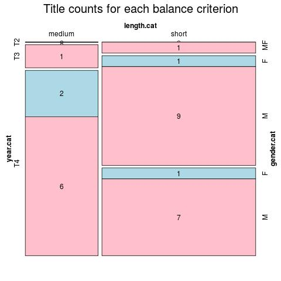

Click on a column heading to sort. Click on a text identifier to read the text (may not work in older browsers).
| Identifier | Encoding | Pages | Words | (Size) | Date (Slot) | Title | Author | Sex | Reprints |
|---|---|---|---|---|---|---|---|---|---|
| SRP18790 | eltec-1 | 110 | 18012 | (short) | 1879 (T2) | Јурмуса и Фатима или Турска сила сама себе једе: прича о ослобођењу шест округа 1832-1834 : ELTeC издање | Милићевић, Милан Ђ. (1831-1908) | M | low |
| SRP18800 | eltec-1 | 241 | 51104 | (medium) | 1880 (T3) | Драгоцена огрлица: прича у своје време : ELTeC издање | Комарчић, Лазар (1833-1909) | M | low |
| SRP18810 | eltec-1 | 80 | 10095 | (short) | 1881 (T3) | Десет пара: прича из живота у вароши : ELTeC издање | Милићевић, Милан Ђ. (1831-1908) | M | low |
| SRP18870 | eltec-1 | 36 | 19350 | (short) | 1887 (T3) | Бабадевојка : ELTeC издање | Гавриловић, Драга (1854-1917) | F | medium |
| SRP18910 | eltec-1 | 106 | 23508 | (short) | ???? (T3) | Иконија везирова мајка: приповетка из XVII века : ELTeC издање | Мијатовић, Чедомиљ (1842-1932) | M | low |
| SRP18920 | eltec-1 | 239 | 41500 | (short) | ???? (T3) | Рајко од Расине: приповетка с краја XVII века : ELTeC издање | Мијатовић, Чедомиљ (1842-1932) | M | medium |
| SRP18930 | eltec-1 | 184 | 36654 | (short) | ???? (T3) | Прве жртве: приповетка из српске прошлости : ELTeC издање | Гавриловић, Андра (1864-1929) | M | medium |
| SRP18960 | eltec-1 | 189 | 29862 | (short) | ???? (T3) | Господа сељаци: приповетка : ELTeC издање | Костић, Тадија П. (1863-1927) | M | low |
| SRP18990 | eltec-1 | 68 | 10080 | (short) | ???? (T3) | Увела ружа : ELTeC издање | Станковић, Борисав (1876-1927) | M | high |
| SRP19020 | eltec-1 | 231 | 37908 | (short) | 1902 (T4) | Једна угашена звезда : ELTeC издање | Комарчић, Лазар (1833-1909) | M | medium |
| SRP19021 | eltec-1 | 322 | 63780 | (medium) | ???? (T4) | Општинско дете: роман једног одојчета : ELTeC издање | Нушић, Бранислав (1864-1938) | M | high |
| SRP19022 | eltec-1 | 52 | 10109 | (short) | 1902 (T4) | Покојникова жена : ELTeC издање | Станковић, Борисав (1876-1927) | M | high |
| SRP19040 | eltec-1 | 246 | 53009 | (medium) | 1904 (T4) | Хаџи-Ђера : ELTeC издање | Илић, Драгутин Ј. (1858–1926) | M | low |
| SRP19050 | eltec-1 | 145 | 22848 | (short) | ???? (T4) | Просиоци : ELTeC издање | Комарчић, Лазар (1833-1909) | M | low |
| SRP19100 | eltec-1 | 249 | 81827 | (medium) | 1932 (T4) | Дошљаци : ELTeC издање | Ускоковић, Милутин (1884-1915) | M | medium |
| SRP19110 | eltec-1 | 36 | 12023 | (short) | 1932 (T4) | Потрошене речи : ELTeC издање | Ускоковић, Милутин (1884-1915) | M | low |
| SRP19120 | eltec-1 | 295 | 94927 | (medium) | 1912 (T4) | Нове : ELTeC издање | Димитријевић, Јелена (1862–1945) | F | medium |
| SRP19140 | eltec-1 | 318 | 53474 | (medium) | ???? (T4) | Чедомир Илић : ELTeC издање | Ускоковић, Милутин (1884-1915) | M | high |
| SRP19190 | eltec-1 | 256 | 51973 | (medium) | 1919 (T4) | Ђакон Богородичине цркве : ELTeC издање | Секулић, Исидора (1877-1958) | F | medium |
| SRP19200 | eltec-1 | 120 | 17942 | (short) | 1920 (T4) | Један од многих : роман из престоничког живота : ELTeC издање | Шишковић, Драгомир (????-????) | M | low |